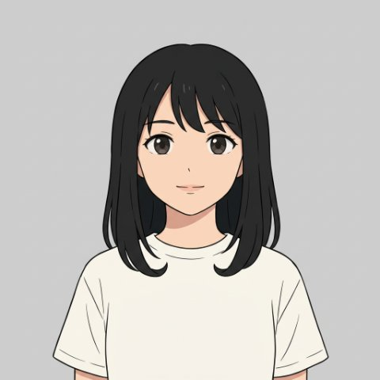

Guilty Influencer
STAGE 1 ・ 下積み編
🏠 HOME
🌓
1/12ターン
1ヶ月目・前半
序盤
👥
0
/10万
🔥 炎上
0%
炎上 0/3回

kotomi_guilty
✓ 平和
0
投稿
0
フォロワー
48
フォロー中
欺流亭 ことみ
（25）
上京したて🗼 半年で10万人いけなかったら田舎に帰ります。
あと
100,000
人
📸 今回の写真を撮る
背景5 × 被写体5
📍 シチュエーション
🖼 被写体
📸 撮影の準備中…
kotomi_guilty
撮影待ち
下書き
🎰
スロットを回して
写真を撮ろう
いいね！0件
✍️ この写真の投稿文を選ぶ
4つのうちどれかは燃える…
投稿文を選んでください
次へ進む